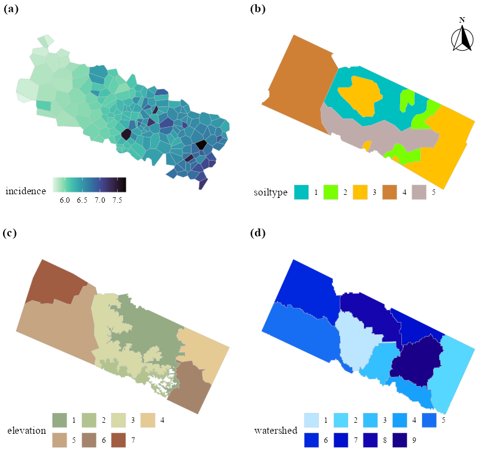
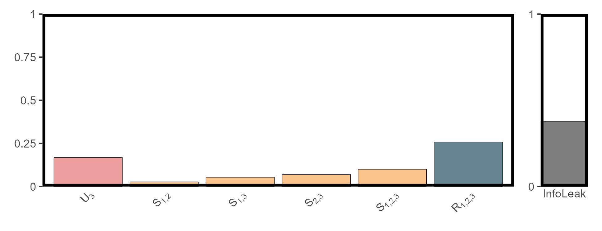
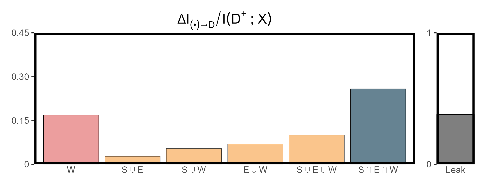

Synergistic-Unique-Redundant Decomposition of Causality
Wenbo Lyu
Last
update: 2026-10-31
Last run: 2026-10-31
Source: Last run: 2026-10-31
vignettes/main2_surd.Rmd
main2_surd.RmdIntroduction
Understanding how causal influences combine and interact is essential for complex systems. The Synergistic–Unique–Redundant Decomposition (SURD) method provides a principled way to break down total information flow between variables into:
- Unique contributions — information uniquely provided by one driver;
- Redundant contributions — information shared by multiple drivers;
- Synergistic contributions — information only revealed when drivers are considered together.
Example
This vignette utilizes the classic neural tube defects (NTD) dataset, widely used in geographical detector tutorials to demonstrate the use of SURD.
First, we install the required R packages to run the subsequent code:
if (!requireNamespace("dplyr")) install.packages("dplyr")
if (!requireNamespace("tidyr")) install.packages("tidyr")
if (!requireNamespace("purrr")) install.packages("purrr")
if (!requireNamespace("tibble")) install.packages("tibble")
if (!requireNamespace("stringr")) install.packages("stringr")
if (!requireNamespace("ggplot2")) install.packages("ggplot2")
if (!requireNamespace("viridis")) install.packages("viridis")
if (!requireNamespace("ggspatial")) install.packages("ggspatial")
if (!requireNamespace("patchwork")) install.packages("patchwork")
if (!requireNamespace("gdverse")) install.packages("gdverse")
if (!requireNamespace("infoxtr")) install.packages("infoxtr")Then, we load and preprocess the NTD dataset from the
gdverse package:
ntdpath = system.file("extdata", "NTDs.gpkg", package = "gdverse")
sf::st_layers(ntdpath)
## Driver: GPKG
## Available layers:
## layer_name geometry_type features fields crs_name
## 1 disease Polygon 189 2 unknown
## 2 watershed Polygon 9 2 unknown
## 3 elevation Multi Polygon 7 2 unknown
## 4 soiltype Multi Polygon 6 2 unknown
disease = sf::read_sf(ntdpath, layer = 'disease')
soiltype = sf::read_sf(ntdpath, layer = 'soiltype')
elevation = sf::read_sf(ntdpath, layer = 'elevation')
watershed = sf::read_sf(ntdpath, layer = 'watershed')
ntd = disease |>
sf::st_centroid() |>
sf::st_join(soiltype[,"soiltype"]) |>
sf::st_join(elevation[,"elevation"]) |>
sf::st_join(watershed[,"watershed"]) |>
dplyr::filter(dplyr::if_all(dplyr::everything(), \(.x) !is.na(.x))) |>
sf::st_drop_geometry() |>
dplyr::select(-SP_ID)
## Warning: st_centroid assumes attributes are constant over geometries
ntd
## # A tibble: 185 × 4
## incidence soiltype elevation watershed
## <dbl> <int> <int> <int>
## 1 5.94 5 5 5
## 2 5.87 4 5 5
## 3 5.88 5 5 5
## 4 5.98 5 5 5
## 5 5.96 1 5 5
## 6 5.66 4 5 5
## 7 5.74 4 5 5
## 8 5.88 4 5 5
## 9 6.1 4 5 5
## 10 5.89 4 5 5
## # ℹ 175 more rowsThe NTD dataset can be visualized as follows:
fig1 = ggplot2::ggplot(data = disease) +
ggplot2::geom_sf(ggplot2::aes(fill = incidence), lwd = .1, color = 'grey') +
viridis::scale_fill_viridis(option="mako", direction = -1) +
ggplot2::theme_bw(base_family = "serif", base_size = 12.5) +
ggplot2::theme(
axis.text = ggplot2::element_blank(),
axis.ticks = ggplot2::element_blank(),
axis.title = ggplot2::element_blank(),
panel.grid = ggplot2::element_blank(),
panel.border = ggplot2::element_blank(),
legend.direction = "horizontal",
legend.position = 'inside',
legend.justification = c(-0.05, -0.095),
legend.background = ggplot2::element_rect(fill = 'transparent', color = NA)
)
fig2 = soiltype |>
dplyr::mutate(soiltype = factor(soiltype)) |>
ggplot2::ggplot() +
ggplot2::geom_sf(ggplot2::aes(fill = soiltype), lwd = .1, color = 'grey') +
ggplot2::scale_fill_manual(
values = c("#00bfbf", "#7aff00", "#ffc100",
"#cf8035", "#c0abab")
) +
ggplot2::theme_bw(base_family = "serif", base_size = 12.5) +
ggplot2::theme(
axis.text = ggplot2::element_blank(),
axis.ticks = ggplot2::element_blank(),
axis.title = ggplot2::element_blank(),
panel.grid = ggplot2::element_blank(),
panel.border = ggplot2::element_blank(),
legend.direction = "horizontal",
legend.position = 'inside',
legend.justification = c(-0.05, -0.05),
legend.background = ggplot2::element_rect(fill = 'transparent', color = NA)
)
fig3 = elevation |>
dplyr::mutate(elevation = factor(elevation)) |>
ggplot2::ggplot() +
ggplot2::geom_sf(ggplot2::aes(fill = elevation), lwd = .1, color = 'grey') +
ggplot2::scale_fill_manual(
values = c("#94ab84", "#b2c38f", "#d7d9a7", "#e6ca94",
"#c5a582", "#a4856c", "#a05d42", "#c0abab")
) +
ggplot2::guides(fill = ggplot2::guide_legend(byrow = TRUE)) +
ggplot2::theme_bw(base_family = "serif", base_size = 12.5) +
ggplot2::theme(
axis.text = ggplot2::element_blank(),
axis.ticks = ggplot2::element_blank(),
axis.title = ggplot2::element_blank(),
panel.grid = ggplot2::element_blank(),
panel.border = ggplot2::element_blank(),
legend.direction = "horizontal",
legend.position = 'inside',
legend.justification = c(-0.05, -0.245),
legend.background = ggplot2::element_rect(fill = 'transparent', color = NA)
)
fig4 = watershed |>
dplyr::mutate(watershed = factor(watershed)) |>
ggplot2::ggplot() +
ggplot2::geom_sf(ggplot2::aes(fill = watershed), lwd = .1, color = 'grey') +
ggplot2::scale_fill_manual(
values = c("#bce6ff", "#55d7ff", "#34bfff", "#17a0fc", "#176ef2",
"#0026de", "#0010cd", "#1505af", "#1a0089")
) +
ggplot2::guides(fill = ggplot2::guide_legend(byrow = TRUE)) +
ggplot2::theme_bw(base_family = "serif", base_size = 12.5) +
ggplot2::theme(
axis.text = ggplot2::element_blank(),
axis.ticks = ggplot2::element_blank(),
axis.title = ggplot2::element_blank(),
panel.grid = ggplot2::element_blank(),
panel.border = ggplot2::element_blank(),
legend.direction = "horizontal",
legend.position = 'inside',
legend.justification = c(-0.05, -0.245),
legend.background = ggplot2::element_rect(fill = 'transparent', color = NA)
)
ntd_maps = cowplot::plot_grid(
fig1, fig2, fig3, fig4, nrow = 2, label_fontfamily = "serif",
labels = paste0("(", letters[1:4], ")"),
label_fontface = "bold", label_size = 15, label_x = -0.075,
hjust = -1.5, align = "hv") +
ggspatial::annotation_north_arrow(
location = "tr",
pad_x = ggplot2::unit(0.45, "cm"),
pad_y = ggplot2::unit(0.75, "cm"),
style = ggspatial::north_arrow_fancy_orienteering(
text_family = "serif", text_face = "bold"))
ntd_maps
It is particularly important to note that the surd
function in infoxtr can only handle entirely discrete data;
continuous inputs can be discretized using appropriate methods prior to
use.
For the continuous response variable (NTD incidence rate), we systematically evaluated five discretization methods (standard deviation, equal interval, quantile, natural breaks, and head/tail breaks) combined with class numbers ranging from 3 to 10. The specific discretization scheme that maximized the unique information in the SURD results was selected to process the NTD incidence rate for the final analysis.
params = tidyr::expand_grid(
bin = 3:10,
method = c("sd", "equal", "quantile", "natural", "headtail")
)
params = params |>
dplyr::mutate(
unique_causality = purrr::pmap_dbl(params, \(bin, method) {
g = ntd |>
dplyr::mutate(incidence = infoxtr::discretize(incidence, n = bin, method = method)) |>
as.matrix() |>
infoxtr:::RcppDiscSURD(max_order = 3)
if (length(which(g$types == "U")) == 0)
return(0.0)
else
return(sum(g$values[which(g$types == "U")]))
})) |>
dplyr::arrange(dplyr::desc(unique_causality))
params
## # A tibble: 40 × 3
## bin method unique_causality
## <int> <chr> <dbl>
## 1 3 natural 0.168
## 2 3 headtail 0.154
## 3 4 headtail 0.154
## 4 5 headtail 0.154
## 5 6 headtail 0.154
## 6 7 headtail 0.154
## 7 8 headtail 0.154
## 8 9 headtail 0.154
## 9 10 headtail 0.154
## 10 3 equal 0.151
## # ℹ 30 more rowsThe optimal parameter combination among the candidates is to discretize the NTD incidence into three classes using the natural breaks method. We run the code to obtain the final results:
res_surd_ntd = ntd |>
dplyr::mutate(incidence = infoxtr::discretize(incidence, n = 3, method = "natural")) |>
as.matrix() |>
infoxtr:::RcppDiscSURD(max_order = 3)
tibble::as_tibble(res_surd_ntd)
## # A tibble: 7 × 3
## vars types values
## <chr> <chr> <dbl>
## 1 V3 U 0.168
## 2 V1_V2_V3 R 0.258
## 3 V1_V2 S 0.0271
## 4 V1_V3 S 0.0536
## 5 V2_V3 S 0.0692
## 6 V1_V2_V3 S 0.0999
## 7 InfoLeak InfoLeak 0.378To simplify visualization, a plotting function is provided below, which produces a SURD decomposition plot — a grouped bar chart of unique (U), synergistic (S), and redundant (R) components, along with a side panel showing the information leak.
utils_plot_surd = \(surd_list,threshold = 0,style = "shallow") {
df = surd_list |>
tibble::as_tibble() |>
dplyr::filter(vars != "InfoLeak")
if(threshold > 0){
df = dplyr::filter(df, values > threshold)
}
df = df |>
dplyr::mutate(
var_nums = stringr::str_extract_all(vars, "(?<=V)\\d+"),
nums_joined = sapply(var_nums, \(x) paste(x, collapse = '*","*')),
vars_formatted = paste0(types, "[", nums_joined, "]"),
type_order = dplyr::case_when(
types == "U" ~ 1,
types == "S" ~ 2,
types == "R" ~ 3
),
var_count = lengths(var_nums)
) |>
dplyr::arrange(type_order, var_count) |>
dplyr::mutate(vars = factor(vars_formatted, levels = unique(vars_formatted)))
if (style == "shallow") {
colors = c(U = "#ec9e9e", S = "#fac58c", R = "#668392", InfoLeak = "#7f7f7f")
} else {
colors = c(U = "#d62828", S = "#f77f00", R = "#003049", InfoLeak = "gray")
}
p1 = ggplot2::ggplot(df, ggplot2::aes(x = vars, y = values, fill = types)) +
ggplot2::geom_col(color = "black", linewidth = 0.15, show.legend = FALSE) +
ggplot2::scale_fill_manual(name = NULL, values = colors) +
ggplot2::scale_x_discrete(name = NULL, labels = function(x) parse(text = x)) +
ggplot2::scale_y_continuous(name = NULL, limits = c(0, 1), expand = c(0, 0),
breaks = c(0, 0.25, 0.5, 0.75, 1),
labels = c("0", "0.25", "0.5", "0.75", "1") ) +
ggplot2::theme_bw() +
ggplot2::theme(
axis.ticks.x = ggplot2::element_blank(),
axis.text.x = ggplot2::element_text(angle = 45, hjust = 1),
panel.grid = ggplot2::element_blank(),
panel.border = ggplot2::element_rect(color = "black", linewidth = 2)
)
df_leak = dplyr::slice_tail(tibble::as_tibble(surd_list), n = 1)
p2 = ggplot2::ggplot(df_leak, ggplot2::aes(x = vars, y = values)) +
ggplot2::geom_col(fill = colors[4], color = "black", linewidth = 0.15) +
ggplot2::scale_x_discrete(name = NULL, expand = c(0, 0)) +
ggplot2::scale_y_continuous(name = NULL, limits = c(0, 1), expand = c(0, 0),
breaks = c(0,1), labels = c(0,1) ) +
ggplot2::theme_bw() +
ggplot2::theme(
axis.ticks.x = ggplot2::element_blank(),
panel.grid = ggplot2::element_blank(),
panel.border = ggplot2::element_rect(color = "black", linewidth = 2)
)
patchwork::wrap_plots(p1, p2, ncol = 2, widths = c(10,1))
}The SURD results are shown in the figure below:
utils_plot_surd(res_surd_ntd)
We can also generate a result plot with the actual variable names, as visualized below:
surd_df = res_surd_ntd |>
tibble::as_tibble() |>
dplyr::filter(types != "InfoLeak") |>
dplyr::mutate(
vars_detail = purrr::map2_chr(
stringr::str_split(vars, "_"),
types,
\(split_vars, type) {
# Replace V1, V2, V3 with actual variable names
replaced_vars = stringr::str_replace_all(
split_vars,
c("V1" = "S", "V2" = "E", "V3" = "W")
# c("V1" = "soiltype", "V2" = "elevation", "V3" = "watershed")
)
# Select the correct UTF-8 symbol based on the type
symbol = if (type == "R") " \u22C2 " else " \u22C3 "
# Collapse the vector into a single string
stringr::str_c(replaced_vars, collapse = symbol)
}
)
) |>
dplyr::mutate(types = factor(types, levels = c("U", "S", "R"))) |>
dplyr::arrange(types) |>
dplyr::mutate(vars_detail = factor(vars_detail, levels = unique(vars_detail)))
# surd_df |>
# ggplot2::ggplot(ggplot2::aes(area = values, fill = types, label = vars_detail)) +
# treemapify::geom_treemap() +
# treemapify::geom_treemap_text(
# fontface = "italic", color = "white",
# place = "centre", grow = TRUE)
fig_a1 = ggplot2::ggplot(surd_df, ggplot2::aes(x = vars_detail, y = values, fill = types)) +
ggplot2::geom_col(color = "black", linewidth = 0.15, show.legend = FALSE) +
ggplot2::scale_fill_manual(
name = NULL,
values = c(U = "#ec9e9e", S = "#fac58c", R = "#668392")
# values = c(U = "#d62828", S = "#f77f00", R = "#003049")
) +
ggplot2::scale_x_discrete(name = NULL) +
ggplot2::scale_y_continuous(
name = NULL, limits = c(0, 0.45), expand = c(0, 0),
breaks = c(0, 0.15, 0.30, 0.45),
labels = c("0", "0.15", "0.30", "0.45")
) +
ggplot2::labs(title = expression(Delta * I[("\u2022") %->% D] / I(D^"+" ~ ";" ~ X))) +
ggplot2::theme_bw() +
ggplot2::theme(
axis.ticks.x = ggplot2::element_blank(),
# axis.text.x = ggplot2::element_text(angle = 45, hjust = 1),
plot.title = ggplot2::element_text(hjust = 0.5, face = "bold",
margin = ggplot2::margin(0, 0, 0, 0)),
panel.grid = ggplot2::element_blank(),
panel.border = ggplot2::element_rect(color = "black", linewidth = 2)
)
df_leak = res_surd_ntd |>
tibble::as_tibble() |>
dplyr::filter(vars == "InfoLeak") |>
dplyr::mutate(vars = "Leak")
fig_a2 = ggplot2::ggplot(df_leak, ggplot2::aes(x = vars, y = values)) +
ggplot2::geom_col(fill = "#7f7f7f", color = "black", linewidth = 0.15) +
ggplot2::scale_x_discrete(name = NULL, expand = c(0, 0)) +
ggplot2::scale_y_continuous(name = NULL, limits = c(0, 1), expand = c(0, 0),
breaks = c(0,1), labels = c(0,1) ) +
ggplot2::theme_bw() +
ggplot2::theme(
axis.ticks.x = ggplot2::element_blank(),
panel.grid = ggplot2::element_blank(),
panel.border = ggplot2::element_rect(color = "black", linewidth = 2)
)
patchwork::wrap_plots(fig_a1, fig_a2, ncol = 2, widths = c(10,1))
🧩 See also:
-
?infoxtr::surd()for function details. -
spEDMpackage for spatial empirical dynamic modeling. -
tEDMpackage for temporal empirical dynamic modeling. -
pcpackage for pattern causality analysis.